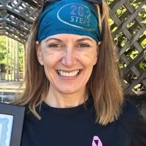
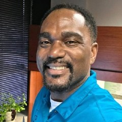
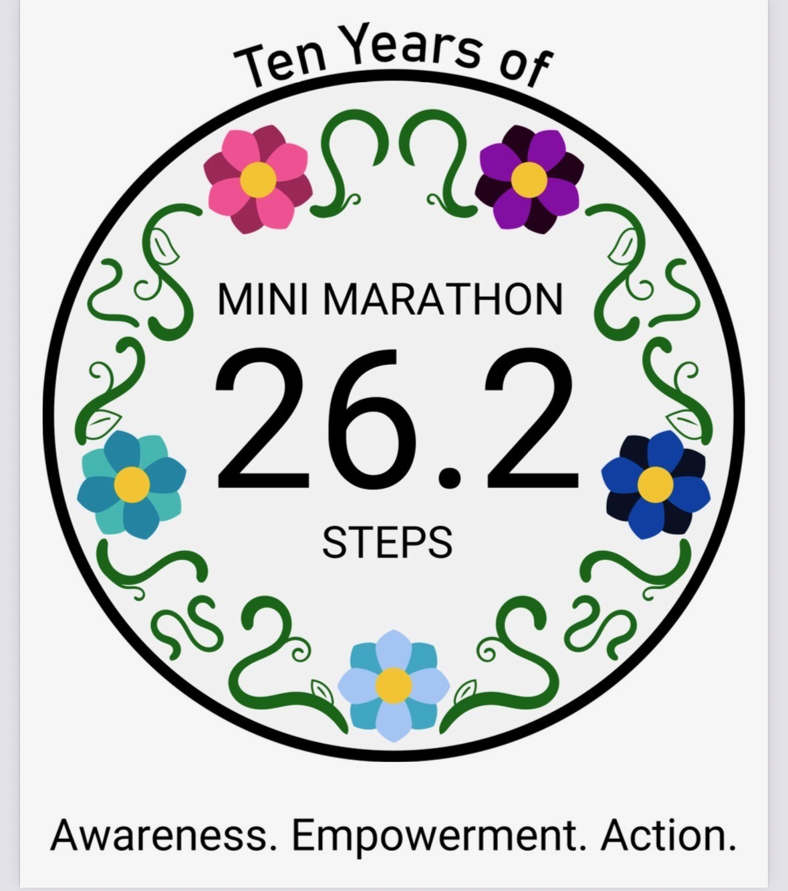

Who we are
A grassroots event grown into a mission-driven nonprofit.
For ten years, the 26.2 Step Mini Marathon has helped turn hereditary cancer awareness into action. What started as a grassroots event has grown into a mission-driven nonprofit focused on reducing barriers to education, genetic testing, and next-step support.
The people behind the Mini Marathon
A volunteer board leads the organization, supported by a medical advisor.

Denise Ibsen Cole
Executive Director & Founder
Patient advocate and BRCA1 carrier who has spent a decade helping families understand hereditary cancer risk and take the next steps. Read her story.
Angela Smith, MBA
President
Founder & CEO of Work Nouveau, a boutique HR consulting agency, and a talent and organizational-development leader who builds intentional, inclusive cultures for purpose-driven organizations.
Jody Collins Skinner
Vice Chair
A retired nonprofit development leader who served as Director of Development at Mission of Deeds, Jody brings years of fundraising and human-services experience to the board.
Ryan Phelan
Secretary
Founder of The Strongbow Group and former CEO of RPE Origin. As an outside operator, he helps senior leaders close the “clarity gap” between how a company sees itself and how the market does, through go-to-market alignment and translation.

Damien Foster, CPA
Treasurer
President of Foster & Dolleck, CPA’s in Omaha, Damien brings deep experience in nonprofit and small-business accounting, auditing, and compliance to his role as Treasurer.
Kathy Johnson
Board Member
A franchise and retail executive with 25 years of multi-unit leadership, most recently Senior Vice President of Franchise & Retail at Godfather’s Pizza. Kathy brings operational and revenue-growth expertise to the board.
Medical Advisor
Kerry J. Rodabaugh, MD, is a board-certified gynecologic oncologist at the Fred & Pamela Buffett Cancer Center in Omaha, with clinical focus areas including cancer risk and prevention, gynecologic cancer, and women’s health. She guides the organization on medical accuracy and helps keep our education current and trustworthy.
The story behind the 10-year logo

Every part of our 10-year logo carries meaning:
- Five flowers represent five high-risk hereditary cancers: breast, ovarian, colon (including Lynch syndrome), pancreatic, and prostate.
- The colors tie it together, with the yellow centers as the through-line and the purple and blue together representing bladder cancer.
- The black outer circle is a protector, standing for skin cancer.
- The leaves and vines form a family tree, a reminder of how much your family health history matters.
- And the steps: sometimes you just have to step back to see the full picture.
The logo was designed by our founder, Denise, and brought to life in digital form by her son, Christian.
Transparency
The 26.2 Step Mini Marathon is a 501(c)(3) nonprofit in formation (EIN 42-3384604). We are board-run and meet quarterly. Donations made on event day are shared equally with our partner charities; year-round gifts support the Mini Marathon’s own growth. Full tax-exempt determination language will be added once approved. For a plain-language breakdown of where every dollar goes, see our Full Transparency page.